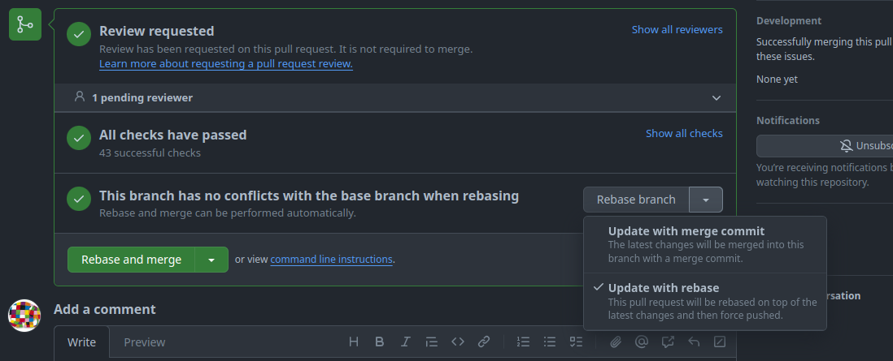
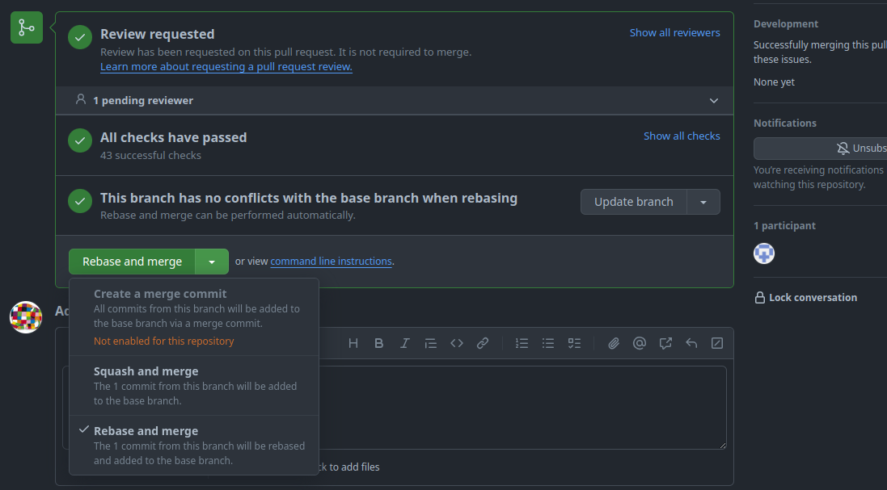

Git Workflow
Pull requests
Update Branch
Our goal is to maintain a linear Git history. Therefore, we prefer git rebase over git merge1. The same applies when using the GitHub WebUI to update a PR's branch.

-
Update with merge commit:
The first option creates a merge commit to pull in the changes from the PR's target branch and this is against our goal of a linear history, so we do not use this option.
-
Update with rebase:
The second option rebases the changes of the feature branch on top of the PR's target branch. This is the preferred option we use.
Rebase and Merge
As said above, our goal is to maintain a linear Git history. A problem arises when we want to merge pull requests (PR), because the GitHub WebUI offers ineligible options to merge a branch:

-
Create a merge commit:
The first option creates a merge commit to pull in the changes from the PR's branch and this is against our goal of a linear history, so we disabled this option.
-
Squash and merge:
The second option squashes all commits in the PR into a single commit and adds it to the PR's target branch. With this option, it is not possible to keep all commits of the PR separately.
-
Rebase and merge:
The third option rebases the changes of the feature branch on top of the PR's target branch. This would be our preferred option, but "The rebase and merge behavior on GitHub deviates slightly from
git rebase. Rebase and merge on GitHub will always update the committer information and create new commit SHAs"2. This doubles the number of commits and spams the history unnecessarily. Therefore, we do not use this option either.
The only viable option for us is to rebase and merge the changes via the command line. The procedures slightly differ according to the location of the feature branch.
Feature branch within the same repository
This example illustrates the procedure to merge a feature branch fubar into a target branch development.
-
Update the target branch with the latest changes.
git pull --rebase origin development -
Switch to the feature branch.
git checkout fubar -
Rebase the changes of the feature branch on top of the target branch.
git rebase developmentThis is a good moment to run test and validation tasks locally to verify the changes.
-
Switch to the target branch.
git checkout development -
Merge the changes of the feature branch into the target branch.
git merge --ff-only fubarThe
--ff-onlyargument at this point is optional, because we rebased the feature branch and git automatically detects, that a fast-forward is possible. But this flag prevents a merge-commit, if we messed-up one of the previous steps. -
Push the changes.
git push origin development
Feature branch of a fork repository
This example illustrates the procedure to merge a feature branch foo from a fork bar of the user doe into a target branch development.
-
Update the target branch with the latest changes.
git pull --rebase origin development -
From the project repository, check out a new branch.
git checkout -b doe-foo development -
Pull in the changes from the fork.
git pull git@github.com:doe/bar.git foo -
Rebase the changes of the feature branch on top of the target branch.
git rebase developmentThis is a good moment to run test and validation tasks locally to verify the changes.
-
Switch to the target branch.
git checkout development -
Merge the changes of the feature branch into the target branch.
git merge --ff-only fubarThe
--ff-onlyargument at this point is optional, because we rebased the feature branch and git automatically detects, that a fast-forward is possible. But this flag prevents a merge-commit if we messed-up one of the previous steps. -
Push the changes.
git push origin development
Except git merge --ff-only.